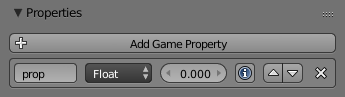

Властивості -- Properties¶
Властивості -- це для логіки гри еквіваленти змінних -- variables. Вони зберігаються з об'єктом та можуть використовуватися для представлення таких речей про нього, як озброєння, здоров'я, ім'я тощо.
Типи Властивості -- Property Types¶
Є п'ять типів властивостей:
- Timer -- Часолік
- Запускається з даним значенням властивості та відраховуються зростаючи, допоки існує об'єкт. Він може, наприклад, використовуватися, якщо ви хочете знати, скільки часу необхідно гравцеві, щоб завершити рівень.
- Float -- Дійсночислове
- Використовує числа з десятковими частинами як значення, може бути у діапазоні від -10000.000 до 10000.000. Це корисно для точних значень.
- Integer -- Цілочислове
- Використовує цілі числа як значення у діапазоні між -10000 та 10000. Корисно для підрахунку таких речей, як боєприпаси, де десяткові частини чисел не є потрібними.
- String -- Рядок
- Приймає текст як значення. Може зберігати до 128 символів.
- Boolean -- Булів
- Булева змінна, має два значення: істина -- true або хиба -- false. Це корисно для речей, що мають тільки два режими, як перемикач світла.
Використання властивостей¶
При виконанні гри значення властивостей задаються, маніпулюються та обчислюються за допомогою сенсора властивості -- Property Sensor та актуатора властивості -- Property Actuator.
Властивості логіки створюються та редагуються за допомогою панелі зліва у редакторі Logic Editor. Меню вгорі надає список доступних типів властивостей.

Панель Properties у редакторі Logic Editor.
- Кнопка Додати Властивість Гри -- Add Game Property
- Ця кнопка додає нову властивість у список, стандартно з типом Float та іменем
prop, яке має зрістний номер, якщо вже існують такі ж імена. - Поле Ім'я -- Name
- Where you give your property its name, this is how you are going to access it through Python or expressions.
The way to do so in Python is by dictionary style look-up (
GameObject["propname"]). The name is case sensitive. - Меню Тип -- Type
- Це меню визначає, який є тип властивості. Доступні варіанти наведено у параграфі Property Types.
- Поле Значення -- Value
- Задає початкове значення властивості.
- Інформація -- Information (кнопка i)
- Показує значення властивості в інформації налагодження. Якщо налагодження увімкнене, то значення властивості показується у верхньому лівому кутку екрану при виконанні гри. Для увімкнення налагодження увімкніть стяг Show Debug Properties у меню Game. Усі властивості при активованому налагодженні далі будуть представлені у вигляді -- ім'я їх об'єкта, ім'я властивості та значення при відтворенні гри. Це корисно, якщо ви підозрюєте, що яка з властивостей викликає проблеми.